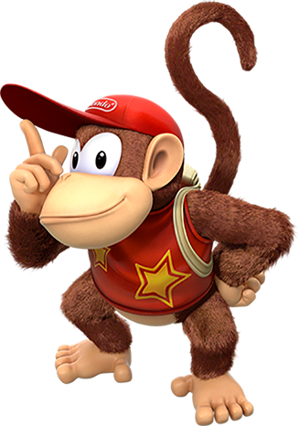
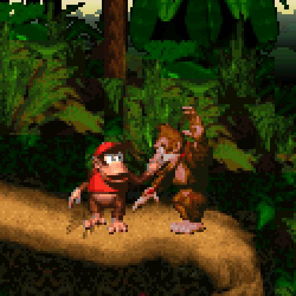
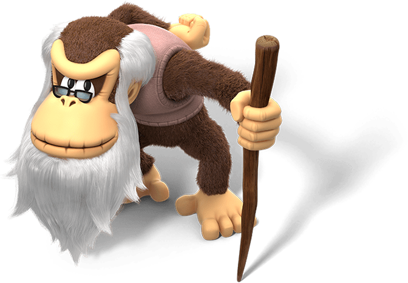
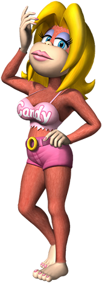
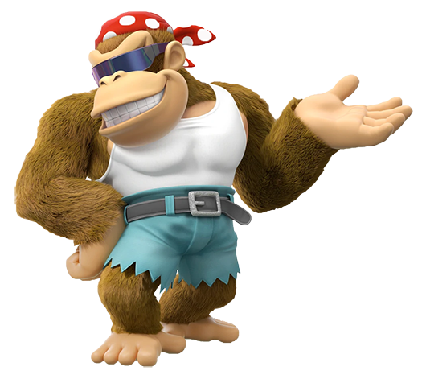

Donkey Kong Country
O Jogo
Donkey Kong Country é um jogo de plataforma em 2D desenvolvido pela Rare, estrelando o personagem Donkey Kong. O jogo foi lançado no Super Nintendo Entertainment System em 1994. Após uma intensa campanha publicitária, a versão original para SNES vendeu mais de 9 milhões de cópias, fazendo deste o segundo jogo mais bem vendido para a plataforma. Este foi o primeiro jogo Donkey Kong a não ser produzido nem dirigido por Shigeru Miyamoto, o criador do personagem; ao invés, o jogo foi produzido por Tim Stamper, embora Miyamoto ainda estivesse envolvido no projeto. O jogo foi posteriormente adaptado ao Game Boy Color em 2000, ao Game Boy Advance em 2003, e disponibilizado no Virtual Console em 2006.
Em Donkey Kong Country, Donkey Kong, ao lado de seu sobrinho e companheiro inseparável Diddy Kong, devem recuperar as bananas roubadas por King K. Rool e seus capangas, os Kremlings. Após verificar o vazio esconderijo de bananas, localizado logo abaixo de sua casa em Kongo Jungle, Donkey Kong embarca em uma aventura em sua terra nativa, a Ilha Donkey Kong. Enquanto coleta as bananas nas diferentes regiões da ilha, Donkey Kong deve derrotar vários inimigos, incluindo os repteis Kremlings, além de outras perigosas criaturas nativas da ilha. Ajudando-o em sua missão estão alguns dos outros Kongs da família: Diddy acompanha Donkey Kong em sua aventura, Cranky providencia dicas (e alívio cômico), Candy opera os pontos de gravação ao redor da ilha, e Funky oferece meio de transporte. Também apoiando Donkey Kong em certas ocasiões estão vários 'colegas animais' (o rinoceronte Rambi, a avestruz Expresso, o peixe-espada Enguarde, o sapo Winky, e o papagaio Squawks), cada um com habilidades diferentes. Após superar as diferentes áreas da ilha, Donkey Kong finalmente chega ao navio pirata Gangplank Galleon, onde o arquirrival de Donkey Kong e líder dos Kremlings, King K. Rool, o aguarda. Após derrotá-lo, o jogo termina, com a cena final mostrando o esconderijo de bananas de Donkey Kong em toda sua antiga glória, cheia de bananas novamente.
Personagens
Donkey Kong III
É o protagonista principal do primeiro jogo, tendo como segundo protagonista seu sobrinho, Diddy Kong.

Diddy Kong
Segundo protagonista do primeiro jogo.

É possível alternar entre os 2 protagonista dentro do jogo, cada um com suas vantagens.

Cranky Kong
Durante todo o jogo, ele aparece em certos pontos do mapa para "brigar" com você, e dar algumas dicas.

Candy Kong
É Responsável por Salvar seu progresso durante a Gameplay.

Funky Kong
Com ajuda dele, você consegue avançar para o proximo mapa do jogo.

King K. Roll
Por fim, o Grande Vilão do Jogo.

Itens que você encontra durante as Fases:
Existem 5 animais que te ajudam: Enguarde, Expresso, Rambi, Squawks, e Winky. Você os encontra em caixas e pode montá-los, exceto por Squawks. Cada um pode ajudar de alguma forma; Enguarde pode nadar mais rápido; Expresso tem grande velocidade e pode voar uma curta distância; Rambi tem grande força e pode encontrar salas secretas; Squawks ilumina locais escuros; Winky ajuda você a pular mais alto.
Existe ao menos um em quase todas as Fases. Um animal token é um tipo de moeda com a figura de uma animal. Quando você coleta 3 desses itens você vai para uma área bônus com o animal que você está.
Existem 3 tipos: Vermelho, Verde e Azul. 1, 2 e 3 vidas respectivamente.
Em cada Fase você encontra as letras K, O, N, e G, e formando a palavra você ganha 1 vida. Elas são douradas e geralmente fora do caminho normal e difícil de se pegar.
Você facilmente perceberá itens escondidos no chão. Pule de uma plataforma bem alta em cima deles para poder pegá-los.
Mundo 1: Kongo Jungle
Fase 1: Jungle Hijinxs
Animais: 1
Rambi, o rinoceronte
Balões vermelhos: 4
1. Entre de volta na casa de Donkey e pule para pegar.
2. Volte onde você começou e verá um cacho. Pule de árvore por árvore até pegá-lo.
3. Continue do anterior pulando pelas árvores bem rápido.
4. Na fase bônus no final, vá rápido para pegar.
Balões verdes: 1
1. (ver 3 anterior) Continue até pegar (muito difícil).
K - Em cima do primeiro Critter
O - Diagonal do checkpoint
N - Perto de Rambi
G - No topo da árvore perto do final da fas
Fases bônus: 2
1. Use Rambi para quebrar a primeira parede que ver assim que pegá-lo. A caverna tem 40 bananas e q balão vermelho (ver Balões vermelhos 1).
2. Logo após o primeiro bônus, como no anterior, quebre a parede. Este bônus você tem que pular e fazer uma melhor de 3.
Itens escondidos: 1
1. Barril de aço
Fase 2: Ropey Rampage
Balões vermelhos: 1
1. Na segunda fase bônus
K - Pule para a esquerda quando estiver na primeira corda.
O - Acima da primeira fase bônus.
N - Pule da 5ª para a 6ª corda, na 1ª fase bônus.
G - No topo da árvore na saída.
Fases bônus: 2
1. Caia em baixo da letra N.
2. Caia perto da seta.
Itens escondidos: 2
1. Apenas um pneu para pegar o item 2.
2. Use o pneu para alcançar o topo da árvore. Então caia no chão para ganhar um Token.
Fase 3: Reptile Rumble
Balões vermelhos: 1
1. Na primeira fase bônus.
K - À esquerda da 1ª fase bônus.
O - Pule no pneu perto do 1º Zinger.
N - Acima do 2º Zinger.
G - No pneu do meio perto do final.
Fases bônus: 3
1. Quebre a parede jogando um barril perto da letra K. Tem bananas e 1 balão vermelho.
2. Pule da esquerda para o segundo barril DK para ver.
3. Pegue o barril perto do 2º bônus e vá até alcançar a primeira parede que ver. Desvie de tudo e jogue-o na parede.
Fase 4: Coral Capers
Animais: 1
Enquarde, o peixe-espada
Balões vermelhos: 1
1.Vá à direita do 2º barril DK até não poder ir mais. Agora desça e o verá.
K - Assim que entrar na fase, vá até não poder ir mais. Agora apenas suba e vai encontrar.
O - Quando ver a segunda seta para baixo, ignore e suba.
N - Vá para cima a partir do 3º barril DK.
G - Vá um pouco a direita da seta final. Agora desça.
Fase 5: Barrel Cannon Canyon
Balões vermelhos: 2
1. Na 1ª fase bônus.
2. Na 2ª fase bônus.
K - Suba na caverna de onde você veio, e siga pela passagem onde começou.
O - Esta está bem no caminho.
N - 2º item escondido.
Fases bônus: 2
1. Quando for atirar do último barril, atire na parede.
2. Quando pegar o barril DK perto do checkpoint, não o jogue. Vá para a próxima parede, desvie do Critter e então jogue.
Itens escondidos: 2
1. Barril DK
2. Letra N
Salve o jogue e vamos para o primeiro chefe.
Chefe 1: Very Gnawty's Lair
Pule em sua cabeça para derrotá-lo. Ele fica mais dificíl a cada acerto porque fica cada vez mais rápido e salta mais alto.
Mundo 2: Monkey Mines
Fase 1: Winky's Walkway
Animais: 1
Winky, o sapo
K - Pule no urubu no começo.
O - Pule na próxima plataforma com Winky.
N - Na fase bônus.
G - Pegue com Winky pulando na plataforma perto da seta.
Fases bônus: 1
1. Após pegar Winky, pule. Você estará na fase bônus.
Fase 2: Mine Cart Carnage
Balões vermelhos: 1
1. Pule assim que pegar o caminho de baixo.
K - No primeiro pulo.
O - Após coletar uma seqüência de 3 bananas esteja preparado para pular.
N - Pule bem rápido no 4º carrinho.
G - Está bem no caminho.
Fase 3: Bouncy Bananza
Animais: 1
Winky, o sapo
Balões vermelhos: 1
1. Na 1ª fase bônus.
K - Use o pneu para pegar.
O - Pelo 2º Zinger.
N - Use o pneu na rocha em movimento. Existe uma parede falsa.
G - Com Winky, pule no meio das 2 paredes.
Fases bônus: 3
1. Pegue o barril DK.
2. Caia da parede falsa para a direita.
3. Com Winky pule no meio das duas rochas.
Itens escondidos: 3
1. Acima de onde começou. É Rambi.
2. Na 1ª fase bônus.. É Winky.
3. Pneu.
Fase 4: Stop and Go Station
K - Após subir algumas estrelas, prepare-se para pular.
O - Quando ver a letra O, role e pule.
N - Apenas pule na plataforma perto dos dois buracos.
G - Apena vá até o final é pegue.
Fases bônus: 2
1. Pegue o barril no checkpoint e continue desviando dos RockKrocs. Agora jogue na parede.
2. Mova o pneu pelo barril DK para a esquerda até ver 3 bananas. Coloque-o na direção das bananas e pule.
Fase 5: Millstone Mayhem
Animais: 1
Winky, o sapo - Use o pneu para alcançar a borda. Agora pule ao topo e continue andando até ver a caixa do Winky.
Balões verdes: 1
1. 2ª fase bônus.
K - Na 1ª fase bônus. Bem à esquerda da fase bônus.
O - Corra e pule no primeiro escorregador.
N - Pule para a direita perto de onde pegou Winky.
G - Pule no urubu.
Fases bônus: 3
1. Leve o pneu para a esquerda e pule.
2. Pegue o barril e quebre a parede no 1º roda gigante.
3. Pegue o pneu e role até onde você pode ver uma alta plataforma. Pule nela. Pule de novo e pronto!
Itens escondidos: 1
1. Pule da plataforma mais alta para a mais baixa com um buraco. Certifique-se que pule no buraco. É um pneu.
Chefe 2: Necky's Nuts
Tudo o que tem a fazer é pular no pneu e esperar para acertá-lo. Repita 4 vezes. Lembre-se que ele fica mais rápido a cada acerto.
Mundo 3: Vine Valleys
Fase 1: Vulture Culture
K - 1º item escondido
O - Você verá logo ao matar um Necky
N - 3ª fase bônus
G - No último barril
Fases bônus: 2
1. Coloque o pneu perto das 3 bananas para cima, pule e vai estar lá.
2. Quando pegar o barril secreto, use-o para quebrar a parede.
Itens escondidos: 3
Nesta fase é fácil achar os itens porque estão enterrados nas pilhas de palha.
1. Letra K
2. Barril
3. Barril
Fase 2: Tree Top Town
K - Atire com o barril para chegar a plataforma
O - Pule no barril para atirar. Ele vai atirar você para outro barril. Agora mire para pegar a letra.
N - 2ª fase bônus
G - Mire no urubu
Fases bônus: 2
1. Pule no Necky para alcançar o canhão. Tente soletrar K-O-N-K
2. Você provavelmente verá uma única banana no fundo da tela. Atire nela e vai ser jogado para a fase bônus
Fase 3: Forest Frenzy
Balões vermelhos: 1
1. Pelo G
K - Mova a corda pelo K. Agora role e pule e pegue a corda.
O - Perto de um Zinger Vermelho. Desvie dele quando subir, e rapidamente desça para pegar.
N - Só siga as bananas.
G - Apenas desvie do Zinger.
Fases bônus: 2
1. Grude em baixo da corda perto do G. Parece que vai ser pego por um urubu mais não vai.
2. Perto do seta final você verá um barril. Pegue-o e desvie dos 5 Kritters, então jogue-o na parede à esquerda.
Itens escondidos: 2
1. Barril DK
2. Barril DK
Fase 4: Temple Tempest
Animais:1
Expresso, o avestruz
Balões vermelhos: 1
1. Na 1ª fase bônus.
K - Em baixo da 2ª corda
O - Balance bem alto a 3ª corda
N - Item escondido
G - Em baixo na última corda você o verá. Pule e vai cair em um canhão
Fases bônus: 2
1. Carregue o 1º barril DK para a 1ª parede que ver. Quebre-a e entre.
2. Siga a seta de bananas e caia nela.
Itens escondidos: 1
1. Pule da plataforma alta no buraco. Letra N
Fase 5: Orang-Utan Gang
Animais: 1
Expresso, o avestruz
Balões vermelhos: 2
1. Na fase bônus 2
2. Na fase bônus 5
K - Acima do Zinger vermelho
O - Abaixo de onde encontrou Expresso
N - Na parte mais baixa da fase
G - Escondida na fase bônus
Fases bônus: 5
1. Vá com Expresso abaixo de onde começou.
2. É abaixo na abertura totalmente a direta. Role para a esquerda no meio do ar.
3 . Não se assuste e caia na precipício perto do pneu. Certifique-se que tenha um barril. Quebre a parede.
4. Na diagonal do 3º bônus. Leve um barril para quebrar. É a letra G.
5. Mate todos os inimigos nesta fase. Agora segure o barril mais próximo e quebre a próxima parede.
Itens escondidos: 2
1. Enguarde Token - Parte mais alta da fase
2. Barril DK - Parte mais alta da fase
Fase 6: Clam City
Animais: 1
Enguarde, o peixe-espada
K - Na parede escondida
O - Suba nas paredes após pegar o 1º barril DK
N - Canto esquerdo à cima depois do 2º barril DK
G - Abaixo do molusco perto do final da fase
Chefe 3: Bumble B. Rumble
Simplesmente pegue o barril e jogue nele. Após ele começar a te perseguir. Quando ele ficar vermelho você não pode acertá-lo. Espere ele ficar amarelo para acertá-lo de novo.
Mundo 4: Gorilla Glacier
Fase 1: Snow Barrel Blast
Balões vermelhos: 1
1. Pule das árvore nos Necky para alcançar
Balões azul: 1
1. Pela seta final
K - Este está certamente visível. Pule e então caia no barril para ganhar tempo
O - Na 2ª área bônus
N - Está bem no caminho
G - No atalho
Fases bônus: 3
1. Vá ao topo do iglu. Espere pelo Necky e então pule nele.
2. Quando pegar o barril que se move, pule a direita e siga a esquerda. Caia.
3. Caia onde está o N.
Fase 2: Slipslide Ride
Balões vermelhos: 1
1. Na 1ª fase bônus.
K - No topo da parede, quando estiver pronto escorregue pela 3ª corda.
O - Pule no Kritter perto do Token do Enguarde para alcançar a corda. Pule para a direita no topo.
N - Pegue a corda com todos os Zingers e suba. Quando subir, você o encontrará com bananas e um barril DK.
G - No topo de uma das últimas cordas.
Fases bônus: 3
1. No início você verá um corda, pule nela. Pule na plataforma quando estiver no topo.
2. Pegue o barril no início perto dos Zingers. Pule no fundo com ele. Agora quebra a parede.
3. Quando você passar alguns Zinger observe a corda lá. Você verá que há uma abertura. Suba lá.
Itens escondidos: 1
1. Token do Enguarde - Caia ou pule no Kritter e então estará lá.
Fase 3: Ice Age Alley
Quando começar esta fase volte e encontre Expresso.
Animais: 1
Expresso, o avestruz
Balões vermelhos: 1
1. 2ª área bônus
K - Pela caixa do Expresso
O - Faça um roll jump da plataforma a direita.
N - Quando encontrar um Steel Keg volte para a plataforma um pouco atrás e voe com Expresso. Você vai alcançar a plataforma.
G - Pule o mais alto possível e pegue.
Fases bônus: 2
1. Pule nos urubus até alcançar. Na fase bônus.
2. Veja letra N.
Fase 4: Croctopus Chase
Existe uma maneira de desviar do Croctopus. Esconda-se em uma vala e ele va passar por você, nem mesmo te tocar. De qualquer forma, não o toque.
Animais: 1
Enguarde, o peixe-espada
Balões vermelhos: 1
1. Pelo Enguarde
K - Fácil de pegar. Apenas siga pela direita.
O - Na área secreta. Após pegar o K, vá bem a direita, isso te dá uma melhor chance de encontrar.
N - Difícil de errar. Como a letra K.
G - Na saída.
Fase 5: Torchlight Trouble
Animais: 1
Squawks o papagaio
Balões vermelhos: 1
1. Na 1ª fase bônus.
K - Faça um roll jump no início da plataforma direita.
O - Pule e pegue-o e tente cair na rocha flutuante.
N - Pule para frente e então volte.
G - 2ª fase bônus.
Fases bônus: 2
1. Pegue o barril normal perto do barril DK e jogue-o para trás. Quebre a parede abaixo do barril.
2. Pegue o barril normal perto Mincer. Pule e jogue na parede da esquerda.
Fase 6: Rope Bridge Rumble
Animais: 1
Winky, o sapo
K - Pule na abelha onde está o K com Winky. Cuidado para cair de volta onde estava.
O - Faça um roll jump.
N - Pule no pneu, o único problema é cuidar para não cair errado.
G - Faça um roll jump.
Fases bônus: 2
1. Caia entre os 2 pneus.
2. Você provavelmente verá um única banana acima no céu quando estiver na rocha flutuante com um pneu. Pule nele.
Chefe 4: Really Gnawty Rampage
Como os outros antgeriores, ele vai pular mais alta e fica mais resistente a cada acerto.
Mundo 5: Kremkroc Industries Inc.
Fase 1: Oil Drum Alley
Animais: 1
Rambi, o rinoceronte
Balões vermelhos: 2
1. Na 1ª fase bônus.
2. Na 2ª fase bônus.
K - Pule na outra plataforma. Pegue o K no caminho.
O - Mova o pneu embaixo do O. Agora pule.
N - Na 3ª fase bônus.
G - A última letra escondida.
Fases bônus: 3
1. Pegue o barril TNT e use-o no óleo com bananas abaixo delas.
2. Uma área bônus dupla. Jogue o barril TNT na parede. Agora, tem um segredo nela. Primeiro, pegue o prêmio mais baixo (3 bananas). Um barril vai cair. Jogue-o na parede a direita. Agora tem a 2ª área bõnus. Não erre porque há somente 1 oportunidade.
3. Quando pegar o item escondido, um barril perto do último Mankey Kong, agora desça um passo, jogue o barril na parede.
Itens escondidos: 7
1. Barril TNT
2. Barril TNT
3. Barril DK
4. Pneu
5. Barril DK
6. Barril normal
7. Letra G
Fase 2: Trick Track Trek
Balões vermelhos: 1
1. 3ª fase bônus
K - Tente não acertar os Neckys quando pegar o K.
O - Pule e pegue.
N - Como o O.
G - Pule sobre o Zinger vermelho.
Fases bônus: 3
1. Fique bem a direita da plataforma e prepare-se para cair na primeira chance e não pule. Você cai bem na canhão.
2. Após pular sobre o Zinger prepare-se para pular no Gnawty. Quando pular onde eles estavam, pule para frente e vai cair num canhão.
3. Role e ataque Mankey Kong no final e vai cair num Token Winky. A direite tem um canhão, pule nele.
Fase 3: Elevator Antics
Balões verdes: 1
1. 2ª fase bônus
K - No topo da corda no início
O - 2ª área bônus
N - Na plataforma onde tem um barril de aço, caia para a direita.
G - Em cima da seta final.
Fases bônus: 3
1. Com Diddy pule de corda para corda, e então suba.
2. Tente pular da última corda pelos 3 grupos de Zingers.
3. Quando estiver no elevador perto da saida apenas fique nele. Você vai chegar numa entrada. Entre e pronto.
Itens escondidos: 2
1. Bananas
2. Bananas
Fase 4: Poisoned Pond
É provavelmente a fase de água mais difícil do jogo. Uma dica para ficar mais fácil: volte de onde você começou.
Animais: 1
Enguarde, o peixe-espada
K - Acima de onde você começa
O - Você verá na sua frente
N - Em cima do buraco menor
G - Você verá na sua frente
Fase 5: Minecart Madness
Balões vermelhos: 1
1. Na 1ª fase bônus
K - Na corda
O - Pule no grupo de Neckys para alcançar
N - Pule fora do carrinho quando for pegar o N
G - Pule no Pneu
Fases bônus: 3
1. Quando estiver na parte mais alta da fase fique pulando e eventualmente vai acertar um canhão
2. Pule do carrinho quando estiver na parte mais alta do monte e então caia no pneu. Pule no canhão.
3. Pule do carrinho quando ver um grupo de pneus. Tente cair em um. Agora, siga acima no canhão.
Fase 6: Blackout Basement
K - Assim que pular para a próxima plataforma pegue este durante o caminho
O - 1ª item escondido
N - Na 1ª fase bônus
G - Algum lugar perto da seta final
Fases bônus: 2
1. Na última plataforma em queda, não pule dela. Fique e vai cair num canhão.
2. Quando você pegar o barril de aço vá a direita e jogue na parede. Pule e você pode ir para o final da fase e também quebre a parede para abrir outra área bônus.
Chefe 5: Boss Dumb Drum
Preste atenção quando ele pisar, fique indo da esquerda para a direita. Ele vai jogar um inimigo. Mate-o e então ele vai fazer de novo e de novo. É melhor se você usar Donkey na maioria do tempo. Alguns inimigos Diddy não pode matar. Esse chefe joga os inimigos na ordem: 2 Slippas, 2 Trap-Claps, 2 Klumps, e 2 Armys.
Mundo 6: Chimp Caverns
Fase 1: Tanked Up Trouble
Balões vermelhos: 1
1. Na 1ª fase bônus.
K - Pule no Necky para pegar
O - Na pequena plataforma a direita com um Kritter. Pule do Kritter e pegue o O e volte bem rápido.
N - Desça na plataforma flutuante. Certifique-se ter um pneus para fazer isso. Agora pule no pneu entre os dois Zingers para pegar o combustível.
G - Pule no Zinger vermelho.
Fases bônus: 1
1. Pule da plataforma no canhão quando ele estiver na vertical
Fase 2: Manic Mincers
Animais: 1
Rambi, o rinoceronte
Balões vermelhos: 2
1. Na 1ª fase bônus
2. 3ª fase bônus
K - Abaixo do 3º Mincer
O - Entre 2 Mincers
N - Pule na plataforma flutuante
G - 2ª fase fônus
Fases bônus: 3
1. Você pode ir com Rambi ou jogar um barril TNT
2. Simplesmente ande na entrada
3. Pegue o TNT perto do barril DK e pule da borda. Jogue-o na parede.
Fase 3: Misty Mine
K - Na 1ª fase bônus.
O - Na 1ª fase bônus.
N - Na 1ª fase bônus.
G - Na 1ª fase bônus.
Fases bônus: 2
1. Após o barril em movimento segure na corde e desça tudo.
2. Quando pegar o TNT com Diddy, corra todo o caminho para baixo até chegar na parede e jogue.
Fase 4: Loopy Lighs
Balões vermelhos: 1
1. pelo Token do Expresso
K - Na 1ª fase bônus
O - Faça um roll jump
N - Pelo Token do Expresso
G - Pule para pegar
Fases bônus: 1
1. Pule para baixo onde estão as bananas
Fase 5: Platform Perils
K - Pule para pegar
O - Pule quando estiver para cair
N - Tente não pular muito alto para não ser pelo pelo Zinger
G - Pule para pegar
Fases bônus: 2
1. Role para pegar
2. Não pule quando a plataforma cair
Chefe 6: Necky's Revenge
Ele está de volta e mais poderoso. Fique pulando nele para derrotá-lo. Quando fizer umas 5 vezes você vence.